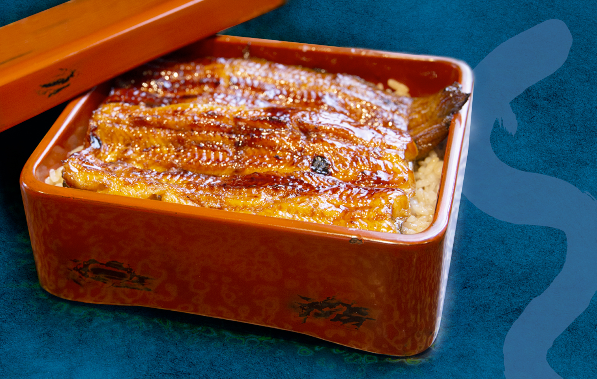
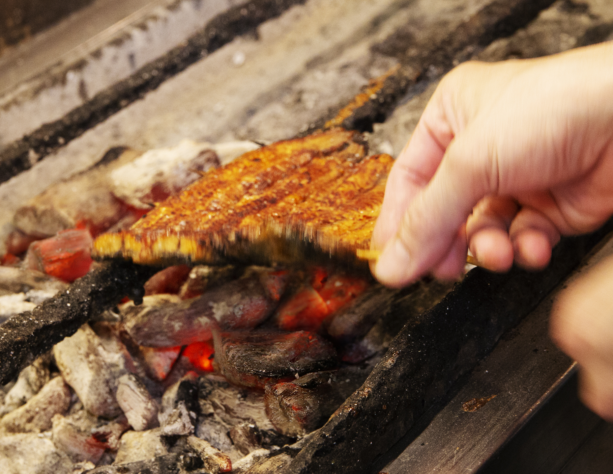
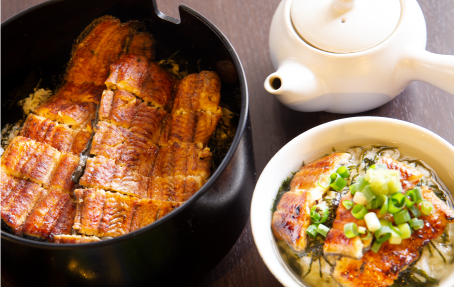

昭和十二年創業
九州鹿児島直送の活鰻を、備長炭でじっくりと。継ぎ足し続けた秘伝のタレと、職人の手仕事が守り続けてきた、八王子・吉祥寺のうなぎ専門店。
志乃ざきについて
昭和12年、女将・きくの名をとり「きくや」として創業。昭和16年頃から天然のうなぎを扱いはじめ、終戦後の昭和22年、うなぎ専門店としての営業がはじまりました。それが志乃ざきの原点です。三代目・篠崎賢治が受け継ぐ今も、隅々まで拘った、丁寧な志乃ざき流のうなぎをお楽しみいただけます。
当店の歴史を見る
志乃ざきのこだわり
鰻、タレ、炭、米、水 — ひとつひとつの素材を、信頼できる産地から直接仕入れています。化学調味料は一切使用しません。

職人の手仕事
毎朝、鰻を一尾ずつ手で捌き、備長炭の炭火でじっくりと焼き上げます。うちわであおぎながら火加減を見極めるのも、代々受け継がれてきた職人の勘。焼き上がりに、継ぎ足しのタレをくぐらせ、艶やかな蒲焼に仕上げます。

メニュー
うな重 ¥4,500〜。白焼き、う巻き、骨煎餅などの一品料理から、日本酒・オーガニックワインまで。八王子本店では二名様より承る会席コースもご用意しております。
メニューをすべて見る催事出店のお知らせ
みずき通りフェスティバル出店
「まるごとぜんぶ八王子」の本に掲載されました。
メディア掲載